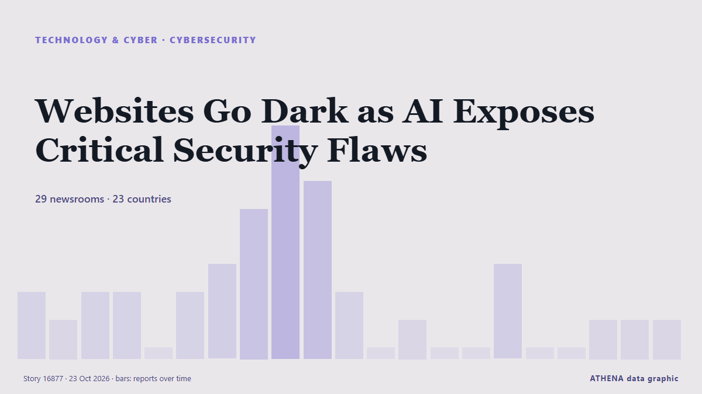

Websites Go Dark as AI Exposes Critical Security Flaws

Government websites in Europe and elsewhere went offline after the disclosure of critical vulnerabilities in a widely used programming language sent website operators around the world scrambling to… von RTÉ News
Unabhängig gemeldet von 29 Medien in 23 Ländern seit dem 21. Okt., zuerst von RTÉ News; die Berichterstattung ist abgeklungen. ATHENA stuft das Risiko als erhöht ein (4.4/10), vor allem wegen der Schwere des beschriebenen Schadens und seiner geografischen und sektoralen Reichweite. Die Konfidenz liegt bei 89 % (hoch): 29 Medien bestätigen es unabhängig, bei einer mittleren Verlässlichkeit der Quellen von 76 %. Wer berichtete: 4 Medien in Vereinigte Staaten · United States, 4 Medien in Oman, 3 Medien in Nepal. Die Berichterstattung lief von 21. Okt. bis 23. Okt., über 61 Stunden.
Warum es wichtig ist: Entwicklungen in Technologie und Cybersicherheit prägen Sicherheit, Wettbewerb und die Regeln des digitalen Lebens.
Was sich geändert hat: 6 neue Berichte von 5 Redaktionen in den 24 Stunden bis 23. Okt..
Erste Schlagzeile: Websites go dark worldwide as AI exposes critical security flaws
Schlagzeilen werden auf Englisch angezeigt, wie veröffentlicht.
Auf einen Blick
Ausgewählt, bewertet und geschrieben nach der veröffentlichten Methodik von ATHENA. Kein Redakteur greift in einzelne Ereignisse ein. So entsteht ATHENA ›
| 21 Oct 07:46 UTC | 2 |
|---|---|
| 21 Oct 10:46 UTC | 1 |
| 21 Oct 13:46 UTC | 2 |
| 21 Oct 16:46 UTC | 2 |
| 21 Oct 19:46 UTC | 0 |
| 21 Oct 22:46 UTC | 2 |
| 22 Oct 01:46 UTC | 3 |
| 22 Oct 04:46 UTC | 5 |
| 22 Oct 07:46 UTC | 8 |
| 22 Oct 10:46 UTC | 6 |
| 22 Oct 13:46 UTC | 2 |
| 22 Oct 16:46 UTC | 0 |
| 22 Oct 19:46 UTC | 1 |
| 22 Oct 22:46 UTC | 0 |
| 23 Oct 01:46 UTC | 0 |
| 23 Oct 04:46 UTC | 3 |
| 23 Oct 07:46 UTC | 0 |
| 23 Oct 10:46 UTC | 0 |
| 23 Oct 13:46 UTC | 1 |
| 23 Oct 16:46 UTC | 1 |
| 23 Oct 19:46 UTC | 1 |
| 22 Oct 07:04 UTC | 3.9 |
|---|---|
| 22 Oct 07:07 UTC | 4.9 |
| 22 Oct 19:55 UTC | 4.6 |
| 23 Oct 20:36 UTC | 4.4 |
Warum diese Zahlen
Bedeutung
Risiko
Konfidenz
Die Berichterstattung – wer berichtete, und wann
Schlagzeile wie veröffentlicht · öffnet das Original- RTÉ News · Irland · IrelandWebsites go dark as AI exposes critical security flaws
- Express Tribune · PakistanGovernment websites in Europe, elsewhere go dark as software flaw sparks security scramble
- Helsinki Times · Finnland · FinlandGovernment websites shut down in Finland over critical security flaws
- Global News (World) · Kanada · CanadaOttawa taking down some federal websites over critical global vulnerability
- Krebs on Security · Vereinigte Staaten · United StatesWidespread PHP Flaw May Cause Many Site Outages Today
- Dawn · PakistanGovernment websites go dark after AI-discovered flaw sparks security scramble
- RFI English · Frankreich · FranceWebsites go dark as AI exposes critical security flaws worldwide
- Helsinki Times · Finnland · FinlandAI-discovered security flaws trigger website shutdowns worldwide
- Oman Observer · OmanWebsites go dark as AI exposes critical security flaws
- Sky News (World) · Vereinigtes Königreich · United Kingdom'Millions' of exploitation attempts since security flaw affecting websites emerged
- MercoPress · UruguayGlobal alert over two critical PHP flaws forces government websites offline
- Oman Observer · OmanWebsites go dark as AI exposes critical security flaws
- Daily Maverick · Südafrika · South AfricaGovernment websites go dark after AI-discovered flaw sparks security scramble
- Channels TV · NigeriaWebsites Go Dark As AI Exposes Critical Security Flaws
- The Korea Times · Südkorea · South KoreaWebsites go dark worldwide as AI exposes critical security flaws
- The Kathmandu Post · NepalWhat is PHP, and why are security flaws putting European government websites at risk?
- Rappler · Philippinen · PhilippinesAsian governments step up cyber defenses after PHP flaw
- ProtoThema English ·Global alert as websites go offline worldwide over security flaws threatening millions of sites
- The Local Germany · Deutschland · GermanyThousands of websites offline across Germany due to security flaw
- The Korea Times · Südkorea · South KoreaPHP security flaws alarm Korean government, companies
- Euronews English · Frankreich · FranceWebsites go dark after AI exposes major programming language security flaw
- The Straits Times · Singapur · SingaporeWebsites go dark worldwide as AI uncovers flaws in code powering much of the internet
- ProtoThema English ·What is PHP, the programming language that forced government websites offline over critical security flaws?
- Club of Mozambique · Mosambik · MozambiqueGovernment websites go dark after AI-discovered flaw sparks security scramble
- The Daily Star — page reader · Bangladesch · BangladeshHow two PHP flaws brought down websites around the world
- The Straits Times · Singapur · SingaporeGovernments, companies take websites offline over PHP flaws
- Guardian Business · Vereinigtes Königreich · United KingdomWebsites across world hit by millions of attempts to exploit PHP code flaw
- The New York Times (World) · Vereinigte Staaten · United StatesPHP Security Flaw Sets Off Global Rush to Patch, Leaving Websites Offline
- The National · Vereinigte Arabische Emirate · United Arab EmiratesUK orders dozens of official websites offline after flaw warnings
- Turkish Minute · Türkei · TurkeyTurkey issues cyber warning as website flaws spark global alarm
- Eye Radio · Südsudan · South SudanNational Communication Authority warns South Sudanese websites of global cybersecurity threat
- Oman Observer · OmanWebsites go dark as AI exposes critical security flaws
- The New York Times (World) · Vereinigte Staaten · United StatesWhat Is PHP? Why Are Government and Business Websites Going Offline?
- LRT English · Litauen · LithuaniaAround 100 Lithuanian websites vulnerable to critical PHP flaw, cybersecurity chief says
- The Kathmandu Post · NepalBanks and government agencies take websites offline over PHP security flaws
- The Kathmandu Post · NepalNepal takes government websites offline over critical PHP flaws
- Asharq Al-Awsat (English) · Saudi-Arabien · Saudi ArabiaWebsites Go Dark as AI Exposes Critical Security Flaws
- Oman Observer · OmanWhat Is PHP? Why Are Government and Business Websites Going Offline?
- Daily Maverick · Südafrika · South AfricaOFFLINE: SA’s Presidency website taken down as cybersecurity flaw sparks warnings across the world
- Fortune · Vereinigte Staaten · United StatesHow an OpenAI model exposed a flaw in 70% of the internet’s websites